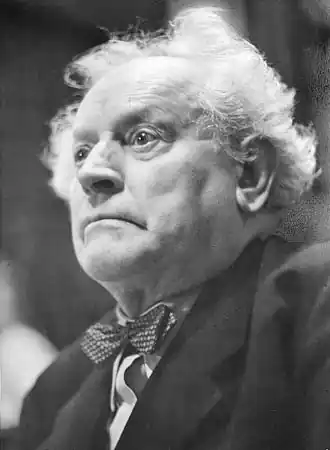
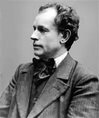

Нексе Мартін (Nexe, Martin; автонім: Андерсен, Мартін — 26.06.1869, Копенгаген — 01.06.1954, Дрезден) — данський письменник. Народився у сім'ї робітників, здобув фах шевця; закінчивши селянську вишу школу, став учителем. У своєму виступі на з'їзді письменників 1934 р. у Москві він стверджував, що література має зображати реальну дійсність, а не вигадані події та виняткових героїв. її головним персонажем повинен стати пролетар. Але ставлення Нексе до літератури радянської держави було позбавлене апологетичності. Він бачив уже тоді, що ця література відірвана від минулого, що психологічні характеристики персонажів бліді, що в ній майже немає гумору. Нексе вважав, що писати слід не лише для того, щоб ідеали закликали до боротьби, а й "для годин тиші, коли людина зостається наодинці з собою". Нексе був переконаний, що "митець має давати прихисток усьому... він мусить мати материнське серце, виступати на захист слабких і невдах". У статті 1939 р. він стверджував, що письменник покликаний бути "внутрішнім оком людства", тобто бачити сам і допомагати іншим бачити сутність речей, красу світу, відповідати на складні питання часу. Аби бути "внутрішнім оком людства", письменникові слід бути представником маси, тільки тоді його устами може говорити людство. Він вірив у величезну силу письменника і пам'ятав про його не меншу відповідальність перед людьми.
Початком творчого шляху Нексе слід вважати 1898 р., але справжнім його народженням як першого західноєвропейського пролетарського письменника став 1906 p., коли почала виходити тетралогія про робітничий рух "Пелле-завойовник" ("Pelle Erobreren", 1906—1910). Тут автор показує, як формується свідомість простої людини, як вона приходить до думки про пролетарську солідарність і необхідність спільної боротьби з гнобителями.
Наступний роман — "Дітте — дитя людське" ("Ditte Menneskebarn", 1917—1921) — це широке епічне полотно, де особиста доля реальної дівчинки, а згодом жінки Крістін Манн, котру називають Дітте, пов'язується з долями всіх людей: її прізвище "Манн" у перекладі означає "людина". Дитя людське, вона проходить складний життєвий шлях, але знаходить свою дорогу в спільній боротьбі пролетаріату. Велику допомогу надає їй Мортен — письменник-демократ, комуніст, котрий стає героєм наступного роману — "Мортен Червоний" ("Morten hin R0de", 1945—1954). Завершує серію роман "Втрачене покоління" ("Den fortable Generation", 1948), що залишився у фрагментах — "Жанетта" ("Jeanette").